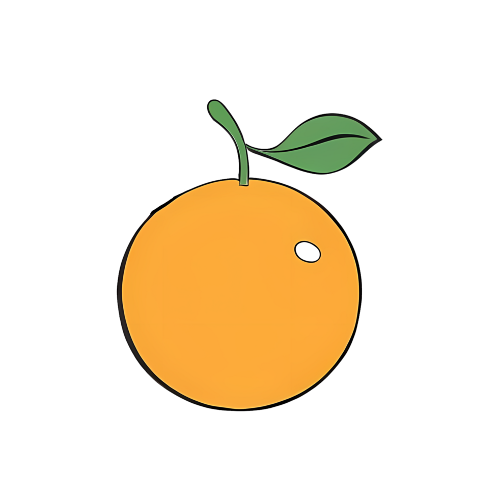
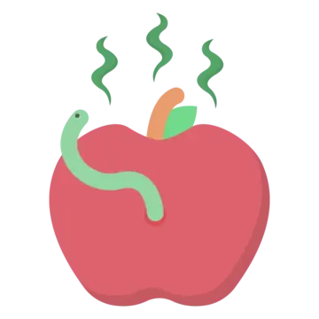

Mueve al catcher usando las flechas del teclado:
Si presionas arriba tendrás un boost de velocidad!
Atrapa las frutas buenas (naranjas) y evita las frutas malas (manzanas con gusanos).
 Al dejar caer una fruta buena o atrapar una fruta mala, pierdes una vida.
Ganas el juego si llegas a 15 puntos.